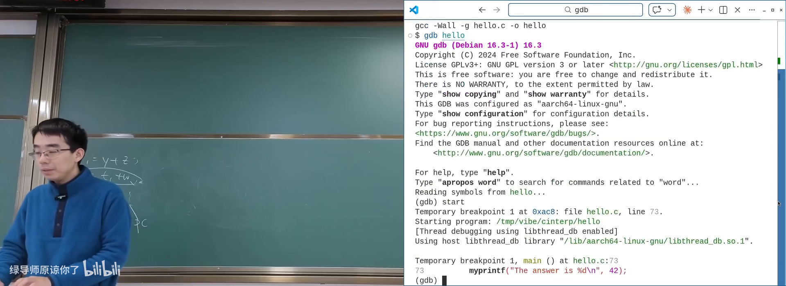
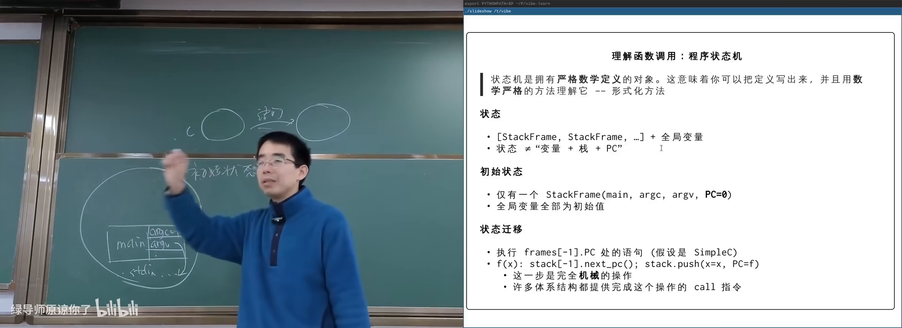
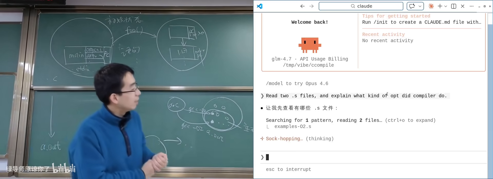
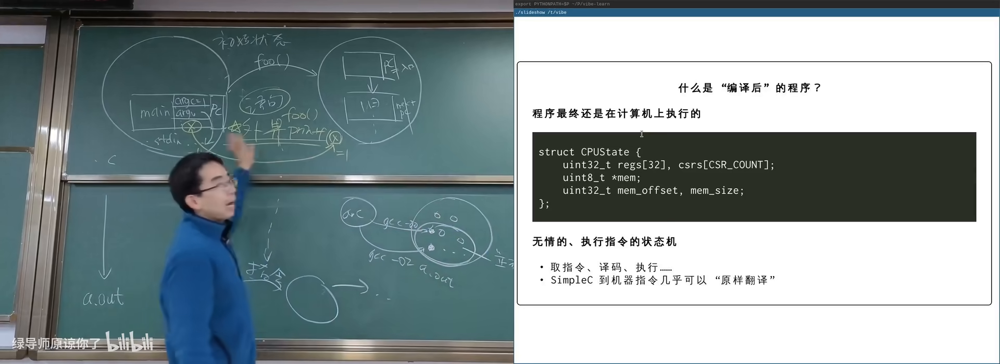
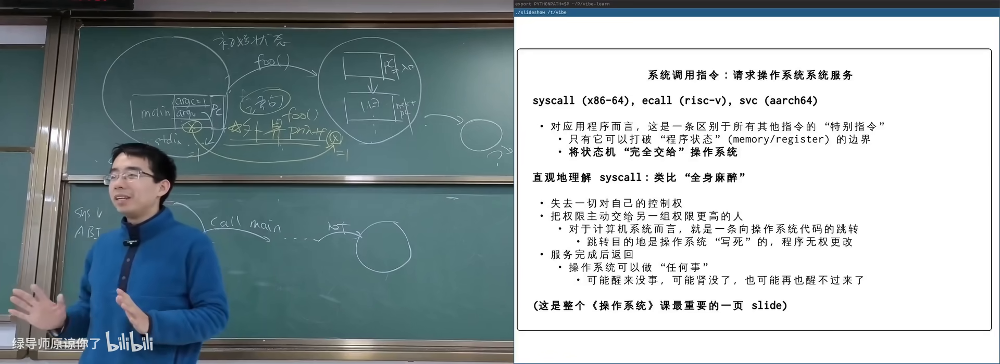
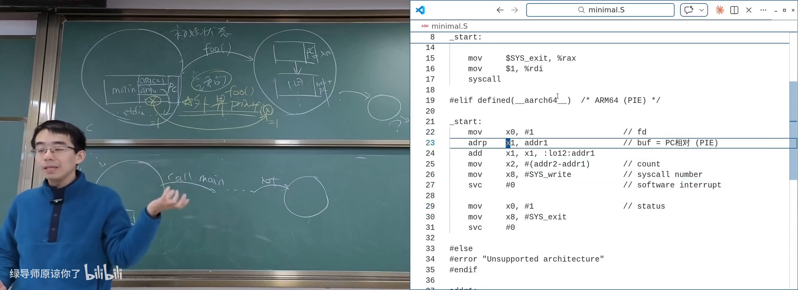
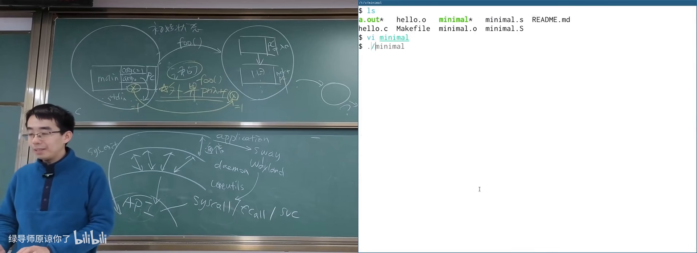
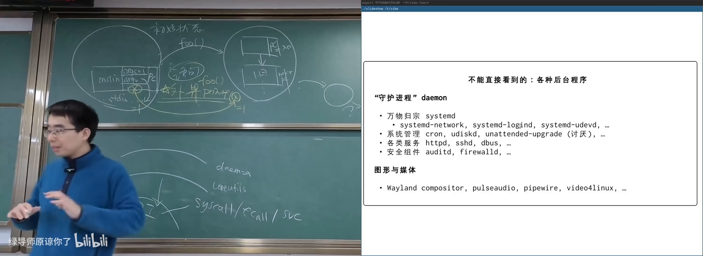
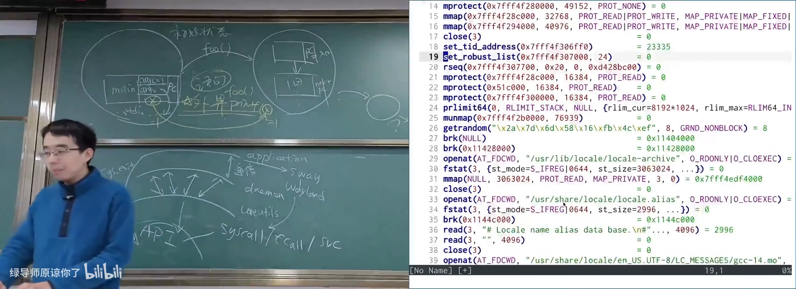

原视频：Bilibili · BV1KNPHzPEra 课程：NJU《操作系统原理》2026 第 2 讲 整理说明：本书由视频语音转录后经 AI 重构而成，口语已转写为书面语；关键时间点均标注 (参考时间)，截图卡片可跳转视频对应位置。
1. 程序是什么：C 作为状态机
(参考时间: 00:00)
本学期从应用程序视角理解操作系统：操作系统就是一组 API。本讲主角是程序——精确到每一个 bit 都有定义的计算对象。
课程选用 C 语言：它介于汇编（可直接与 OS 交互）与高级语言之间，是最早构建应用生态的语言，也是「高级的汇编语言」。
把 C 改写成简单形式
任何 C 程序都可以改写成每行只做一小件事的形式（课程称之为 Simple C）：
t1 = y + z;
t2 = t1 + w;
x = t2;
条件判断可以改写成「变量为真则跳到 A，否则跳到 B」；循环同理。这样 C 的语法成分几乎可以直译成汇编——这正是 C 编译器容易构建的原因。
对比 C++ 虚函数调用：对象里有 vtable（函数表），调用时可能查表，编译行为比 C 复杂得多。
C 程序的形式语义
(参考时间: 00:22)
形式语义（用严格数学定义描述语言各成分「执行时做什么」）：C 程序的状态不是「PC + 全局变量」那么简单，而是：
- 一个函数调用栈：从
main开始，每层栈帧有局部变量和栈帧内的 PC； - 全局变量的取值；
- 每次执行都是从最顶层栈帧的 PC 取出一条语句执行。
函数调用 = 在栈顶压入新栈帧，旧 PC 记为返回地址；函数返回 = 弹出栈顶，恢复旧 PC。
stateDiagram-v2
[*] --> main帧
main帧 --> f帧: 调用 f
f帧 --> g帧: 调用 g
g帧 --> f帧: g 返回
f帧 --> main帧: f 返回
main帧 --> [*]: main 返回 → crash或系统调用
非递归汉诺塔
(参考时间: 00:13)
递归汉诺塔几乎人人都会写；改写成非递归则困难，因为程序调用顺序有副作用，不能像数学函数那样随意交换。
正确做法是把 C 程序本身当成状态机来模拟：定义 struct Frame { int pc; ...局部变量... }，用栈保存帧，每次从栈顶 pc 取语句机械执行。这样 F 调 G、G 调 F 自然解决——你根本不需要关心 PC 指向谁。
用 GDB 的 trace 脚本可以把任意程序的「状态 + 迁移」打印出来，直观看到 n=42 → q=4 这样的变化。

GDB 单步：C 程序作为状态机在 B 站打开 (00:09:12)

形式语义：栈帧与栈内 PC在 B 站打开 (00:23:10)
2. 编译器与编译正确性
(参考时间: 00:29)
编译器把 .c 翻译成 .out。.out 的执行模型是寄存器 + 内存的指令状态机——和硬件同一模型。
早期编译器只做语句到指令的「原样翻译」；后来发现编译器可以改变程序行为，只要对外可观测的效果不变。
什么可以优化
(参考时间: 00:32)
| 源代码特征 | 编译器处理 |
|---|---|
死代码 x=1+2; 且 x 不再使用 |
可删除 |
x=1; x=1; 重复赋值 |
可消掉一次 |
常量表达式 2*3+1 |
可预计算为 7 |
printf / 外部函数调用 |
不可优化掉 |
编译正确：对任何输入，编译前后程序的输出序列完全相同。
唯一不能优化的是向外部的调用——操作系统看不到的边界。当 printf(x) 把 x 送到外部时，那次运行 x 必须是什么值，优化后也必须是什么值。
若程序从不输出任何东西且会终止，编译器理论上可以优化成空程序。

GCC -O0 与 -O2 对比：常量折叠在 B 站打开 (00:35:40)

编译正确性：对外输出序列不变在 B 站打开 (00:40:10)
3. 系统调用：操作系统提供的 API
(参考时间: 00:41)
最小程序不是从 main 开始的
尝试写最小 hello.c：gcc hello.c 得到的二进制很大；直接 ld 会报 undefined reference to puts——标准库未链接。
若写一个只有 _start 里死循环的汇编程序，ld 可以链接，程序真的能跑。但若 _start 直接 ret：栈顶初始返回地址是 0，PC 变成非法地址 → 段错误（进程访问了不该访问的内存，被操作系统终止）。
这说明：真实进程的初始状态由 ABI（应用二进制接口，规定调用约定、栈布局、初始状态等） 定义，有一段初始化代码会调用 main，main 返回后初始化代码再调用系统调用退出。
汇编里的最小 hello world
(参考时间: 00:50)
x86-64 系统调用约定：
- 系统调用号放入
RAX； - 参数依次放入
RDI, RSI, RDX, ...； - 执行
syscall。
ARM64：参数在 X0–X5，调用号在 X8，执行 svc #0。
; ARM64 伪代码示意
mov x0, #1 ; 文件描述符：标准输出
ldr x1, =msg ; 缓冲区地址
mov x2, #len ; 长度
mov x8, #64 ; write 的系统调用号
svc #0 ; 陷入操作系统
mov x8, #93 ; exit
mov x0, #1 ; 返回值
svc #0
GDB 单步执行到 svc 时，hello world 已经打印出来——操作系统在背后执行了可能上万条指令。
系统调用像全身麻醉
(参考时间: 00:54)
系统调用（应用程序把控制权完全交给操作系统、请求完成某项服务的指令） 的行为：
- 像签手术同意书：事先把参数写入寄存器（contract）；
- 执行
syscall后，程序失去对执行过程的感知； - 操作系统检查权限，合理则完成服务（可能改你的内存、填 buffer）；
- 返回后程序继续；若是
exit，则永远不再返回。
其他指令只能改变当前进程的寄存器和内存；只有系统调用能影响进程外部的世界。

系统调用：应用与 OS 的唯一接口在 B 站打开 (00:54:00)

最小 hello world：参数进寄存器再 svc在 B 站打开 (00:51:20)
4. 应用生态：从最小程序到完整世界
(参考时间: 00:59)
在操作系统面前，众生平等：桌面、VS Code、Claude Code、浏览器与最小的 minimal.s 一样，都是 ELF 可执行文件，都通过同一套系统调用请求服务（调度策略上可能有 nice 优先级差异）。
分层的应用世界
flowchart TB
A[应用程序<br>编辑器/浏览器/Agent] --> B[库与框架<br>GTK/libc/运行时]
B --> C[守护进程 Daemon<br>窗口管理/蓝牙/挂载]
C --> D[核心工具 Coreutils<br>ls/cp/grep/ld]
D --> E[操作系统 API<br>系统调用]
E --> F[硬件]
- Coreutils / 二进制工具：
ls、cp、grep、ld、objdump、strings等，直接建立在系统调用之上； - Daemon（后台服务进程）：
bluetoothd、cron、udisksd（U 盘自动挂载）等——插 U 盘自动出现图标，是某段程序与 OS 交互的结果； - 图形层：应用 → 库（GTK）→ 窗口管理器 → Wayland/X11 → 操作系统，而不是每个程序直接抢屏幕。
文件系统可以构建信息系统
课程提交系统演示：提交物以目录+文件形式存放，Online Judge 扫描目录评测，find + 删除文件即可批量 rejudge。相比数据库，文件系统更易被 hacker（包括 AI Agent）直接操作。

Everything is a program：file 查看 ELF在 B 站打开 (01:11:00)

应用分层：应用 / 库 / daemon / coreutils在 B 站打开 (01:07:00)
AI 可以读懂二进制中的 ARM 机器码，定位 mov 返回值指令并修改——计算机世界没有魔法。
5. 库与工具：站在系统调用之上
(参考时间: 01:20)
直接用 write 一个字符一个字符打印很痛苦，因此需要复用机制——第一个就是 C 标准库（libc）。此后 C++、Python、Java、Android 等生态层层垒起。
系统里处处是手册：man 4 pts（伪终端）、man 5 proc、man 7 pipe。把手册输出管道给 AI，即可获得 summary 并继续追问实现方式。
学习方式的变化
以前需要自己啃厚重文档；现在只需知道「世界上有什么」，让 AI 帮你提取需要的部分。AI 对已广泛使用的开发者工具的了解，往往超过单个人类专家。
用 file 可以看到系统中程序都是同一种 ELF；用 hexdump / objdump / strings 可以剖析二进制——这些工具本身就是 Coreutils 的一部分。

手册 + AI：binary utilities 能做什么在 B 站打开 (01:22:00)
附录：概念补给
Simple C
- 是什么：把任意 C 程序改写成每行只做一件小事的简化形式。
- 课上为何出现：说明 C 是「高级汇编」，语句可直译指令。
- 和什么像：把长句拆成主谓宾清楚的短句。
形式语义
- 是什么：用严格数学定义描述程序各成分执行时的行为。
- 课上为何出现：C 状态 = 栈帧序列 + 全局变量，执行规则可精确写出。
- 常见误解：不需要你真的去写集合论定义，但要知道背后可精确定义。
栈帧 / Stack Frame
- 是什么：一次函数调用对应的栈上区域，含局部变量与 PC。
- 课上为何出现：函数调用/返回的状态机语义；非递归模拟的基础。
- 和什么像：叠便签，每层写「我从哪来、局部记了什么」。
vtable（虚函数表）
- 是什么：C++ 对象里存放虚函数地址的表，调用时查表跳转。
- 课上为何出现：对比说明 C 比 C++ 更接近汇编、编译器更简单。
- 和什么像：菜单上的菜名到后厨做法的对照表。
编译优化
- 是什么：编译器在保持外部可观测行为不变的前提下改进代码。
- 课上为何出现：死代码消除、常量折叠等；界定什么能优化。
- 常见误解：优化不是「改逻辑」，对外输入输出序列应完全一致。
段错误（Segmentation Fault）
- 是什么：程序访问非法内存时被 OS 强制终止的现象。
- 课上为何出现：空
_start返回后 PC=0 的必然结果。 - 和什么像：闯入未开放区域被保安带走。
ABI（应用二进制接口）
- 是什么：规定调用约定、寄存器用途、栈布局、进程初始状态等的约定。
- 课上为何出现：解释真实程序为何不从
main的第一条源码开始。 - 和什么像：快递面单格式——双方按同一格式才能交接。
系统调用（syscall）
- 是什么：程序请求 OS 服务的指令，执行时控制权交给内核。
- 课上为何出现：应用视角下 OS 就是一组 API。
- 常见误解：库函数（如
printf）不是系统调用本身，底层可能封装了write。
Daemon（守护进程）
- 是什么：在后台持续运行、提供服务的进程。
- 课上为何出现：U 盘自动挂载、蓝牙等「系统行为」都是 daemon 做的。
- 和什么像：小区里值班的物业，你没叫他也在干活。
Coreutils
- 是什么：
ls、cp、mv、grep等基础命令行工具的集合。 - 课上为何出现：直接建立在系统调用上的第一批应用。
- 常见误解：
grep严格说常是独立项目，但 busybox 等套件会捆绑。
ELF（可执行文件格式）
- 是什么：Linux 上可执行文件/目标文件的标准格式。
- 课上为何出现：系统中所有程序（含 minimal）都是同一种 ELF。
- 和什么像：统一规格的集装箱，机器知道怎么装卸。
procfs
- 是什么：以文件形式暴露进程与内核信息的虚拟文件系统（
/proc）。 - 课上为何出现：UNIX「一切皆文件」的典型；可读
maps、mem等。 - 常见误解：
/proc下多数「文件」不占磁盘空间。
书架 Shelf 流水线生成 · 内容衍生自 B 站公开课程视频 BV1KNPHzPEra